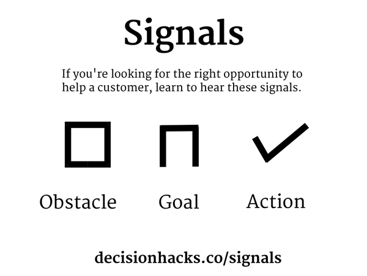
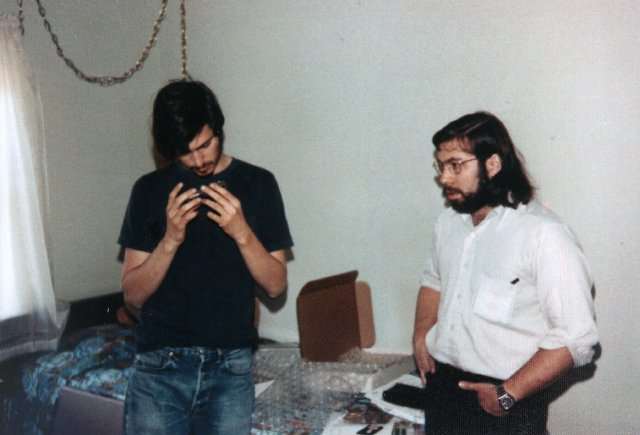
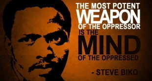

You may have heard of Jiro Ono - one of the best sushi chefs in Japan. It’s considered one of the greatest honours to work with him. Only those who have the utmost devotion to becoming a sushi chef receive a place as his apprentice.
{kind=link}
The first ten years of an apprenticeship with Jiro is spent exclusively on rice.
Once you’ve worked with Jiro for ten years however, you can progress.
To eggs.
That may sound crazy but Jiro has revolutionised his industry. He demands more of his apprentices because he wants to be the master of his craft. Even his suppliers have to match his dedication in order to meet his standards and retain his business.
It takes time to develop a true craft. It takes dedication. It takes practice.
True visionaries change the world by mastering their craft. If we’re trying to change the world with our startups, or aiming to build successful startup ecosystems, we can learn a lot from the masters before us.
Learn your craft
One of the key ways we’ve helped entrepreneurs is by developing the Lean Startup methodology through our Leancamp communities. (Lean Startup is a methodology which focuses on learning and testing your direction as fast as you can, so that you action important changes as soon as possible.)
As Lean Startup became popular among first-time entrepreneurs, we saw that this idea of testing was actually causing them to move slower and rely on worse information. They don’t know how to pick the right test, or they don’t know how to design it.
Startups often fail because they try to run before they can walk, and testing isn’t a shortcut to being good. You soon see that if you dive into testing without knowing how to do it, it’s often counter-informative.
Testing itself requires skill and experience.
Upskill time
We can’t expect to be great at something straight away. If you’re running a marathon you don’t head straight out the door expecting to sail through 26 miles; you train long and hard, working up slowly to your goal.
It’s the same with testing- you need to put in the ground work and get yourself to a certain level before your experiments will deliver accurate information.
When we think about testing, we’re often looking at things like landing pages or Facebook advertising; low cost initiatives which can help us test interest in an idea or concept. The problem here is that if we jump straight into creating landing pages, and those pages meet with no interest, we leap to the conclusion that our product is no good or that our idea won’t work.
What that experiment may actually be saying is- you’re just rubbish at landing pages, or - as we see outside of Western countries, landing pages don’t apply well to local markets.
The same is often true for Facebook advertising, building prototypes and even simply talking to customers. The lack of basic skills leads entrepreneurs to run experiments that miss the important learning completely.
Master educators
I’m personally inspired by Michel Thomas, a famous language teacher who had a new vision for education. He looked at the modern education system and saw that the breakthrough learner should be norm, not the exception. So he set out to create a new way to teach languages, whereby people would routinely progress from their first words to a conversational grasp of the language in just 3 days.
He was able to do this because he realised that the tools and approaches of modern education weren’t good enough, and in many cases counter-productive. So he created completely new teaching techniques to achieve his vision.
Firstly, he realised that stress inhibits learning, and that anticipating being taught causes stress. To break this vicious cycle, he removed things that reminded his students that they were being taught - classrooms, lessons, tests, etc. Instead, he created a conversational, relaxing environment with couches and plants. Then, by breaking languages down into smaller chunks, Michel encouraged users to begin to reconstruct the language for themselves; giving them the tools they needed to say exactly what they wanted to say, when they wanted to say it.
Michel Thomas is one of my role models. I’ve applied his principles to teach Customer Development.
Learn to listen
For startups to truly benefit from customer contact by learning actionable facts; information that allows them to adjust course so they head the right way sooner.
Whenever startups start tackling customer development they tend to want a shortcut. They ask for scripts, surveys and pre-determined questions. They want to know the minimum number of people they need to talk to. Once they have their questions, they run through the motions.
But customer development really comes down to listening, not asking - so unless we have fantastic listening skills already in place, we’re not going to learn from it.
Here’s one way to measure your listening skills in the customer development context:

When you’re talking to a customer you should hear obstacles, goals and actions constantly coming up, at least two or three times a minute. If you’re not hearing this then you probably need to improve your listening skills before you can fully benefit from what the customer is telling you.
Knowing this, we’ve changed the way we teach Customer Development. We’ve dropped the old approach of teaching process and methodology on a whiteboard, and created workshops that actually build listening skills.
We’re successful because we treat enterpreneurship as a craft.
Mastery is linked to tool development
Another aspect of craft I’ve noticed is how a masters tools start to extend them. For example, a painter’s dexterity in his fingertips will extend right through to their paintbrush, or an expert programmer flashes from screen to screen with a few keystrokes.
We can find another example of this: Kraftwerk, one of the first groups to popularize electronic music. These days there’s a huge array of kit to make electronic music, but in 1971 Kraftwerk found that the tools just weren’t good enough to create the kind of music they wanted to make. So they forged their own instruments, hacking a keyboard onto a synthesiser and making other kit to create the electronic sound they lusted after.

Masters don’t accept current tools
The first photographers started with the art- thinking about what shot they wanted to capture, what emotion they wanted to invoke; then they built their camera in order to make that shot. This approach was the norm until sixty years ago.
Now, we choose the camera first. There are plenty of options, all complicated, and all requiring a learning curve. You pick your tool and then you learn to use it.
A lack of mastery is often visible when you hear: “I don’t care how the tool works, I just care that it works. I want to focus on my art.” In photography, this leads to every professional photographer following the same styles and taking the same type of photo.
Can you imagine an airline pilot saying the same? “I don’t care how the mechanics work, that’s not my job. I can just run auto-pilot and land the thing.” Not only would you hesitate to board the plane, I’m certain you wouldn’t expect this pilot to lead innovation in the industry.
True visionaries know what they want to achieve - and create the tools they need to achieve it.
Cargo cults
The corollary to this is that true masters don’t shy away from learning. Even if it’s hard work at times, they understand that figuring out all aspects of their craft is the way to reach their goals.
When you witness this lack of vision, people who are constrained by the tools, methodologies and processes that are currently available, you’re not seeing true masters.
And yet this is the attitude so many technologists take. There’s a boredom and lack of interest towards how computers and software really work.
This is also the attitude that most so-called ecosystem builders take. Copy-paste this accelerator model. Let’s just fly in an expert speaker, or a well-known investor.
It’s cargo culting.

A simple heuristic here is to look for the ethos of the hacker community that cradled Steve Wozniak and Steve Jobs. They were curious tinkerers who constantly created new things because they wanted to change the world. Their first product was a Blue Box - a device that allowed its user to make free phone calls illegally. (Note that hacker doesn’t mean someone who “hacks into” systems illegally, but someone who analyses systems and modifies them, or builds something new, for the greater good.)
Consider the modern world of data surveillance and a hackers response to this. The more people encrypt their communications, the harder it is to just maintain mass surveillance. And yet, even with off-the-shelf tools available, many so called hackers don’t employ them.
Our little techie world has been the crucible of so many societal tipping points before, from the web, to online chat, to Reddit, to Facebook. Hackers are trend-setters and if you’re looking at yourself, or at your local tech communities, as change-makers, look for tool-makers.
Tool development separates the true masters from the pale imitators. Like masters before us, we need to build our own tools in order to really hone our craft and further it.
Global impact from local challenges
Those tools are almost always built in a local context to solve local challenges.
Linus Torvalds built Linux with the help of a massive Open Source community. New versions of the core Linux kernel are released daily and thousands of developers are working on it on any given day!
A programming project with so many active contributors wasn’t possible with the code management tools or methodologies of the time. He realised he had to be the one to bridge the gap. And so he built his own tool to support his way.
That tool - called Git - was so useful and so revolutionary, it the most popular code management system in the world, not just in open source.
What’s world-changing innovations do you admire? How did they start? Was it a local challenge?
Tool development and inter-discplinary learning
For a long time there was a great deal of intrigue about how Johannes Vermeer could paint such photorealistic paintings given the technology at the time (the 17th century). The detail and quality of light in Vermeer’s work suggests to many that he must have been employing more than an artistic eye, and a leading theory now is that Vermeer may have used a camera obscura, the forerunner to the modern camera which allowed him to paint over a projection! Vermeer looked outside the typical tools and artistic processes of the time to find new technology which could extend his craft.
{kind=link}
Borrowing other tools to hack your own
This attitude can also be seen in the world of the original hacker community, which has an ethos of creating lots of great, focused tools that can be strung together by the user to suit their needs. It’s called the UNIX Way. You master a large number of simple tools, and then you don’t need to settle for apps that sort of do what you want – you can quickly and easily construct something that works right for you. The culture values the ability to hack them together in industrious and elegant ways.
The Business Model Canvas was designed to be hacked, built upon, and extended. Alex Osterwalder wanted to make the diverse methods from design available to business strategy.
In the frantic world of accelerators, we found that we didn’t need the Canvas to be a small version of a business plan, or to be a dashboard for success, or to communicate with investors; we needed it to help keep all of the options and possibilities in one place where we could make informed decisions as a team. So we hacked it to create Option Cards - mini-canvases in a card deck, rather than a poster on the wall with sticky notes.
{kind=link}
Cross community mastery
Vermeer’s venture into the camera obscura is an example of how masters look to other disciplines. We can see this in modern times too.
Sangeeta Bhatia is what we’d call a hacker-scientist. She was working in cancer research but was frustrated that so much research wasn’t reaching patients. So she went into clinics and designed a way to detect cancer that involved a quick injection, eating some yoghurt and then doing a urine test. This was a completely new way to test for cancer as it moved away from the typical huge and expensive apparatus that is normally used. By looking outside common pratice and commonly used tools, Bhatia was able to take a huge step towards making cancer detection affordable around the world.
GrantTree offers another example; they’re a great startup business in London. They help startups apply for government funding. You might expect that in order to get their help you’d have to spend hours filling out a forest’s worth of forms. But in order to make this process more efficient GrantTree have borrowed from the tech world. They created their own software, and with that created a number of advantages over their stuffier competitors.
With Leancamp, we connected the nascent Lean Startup communities (circa 2009-2010) to the more established Design world, and to the broader-viewed business world though the Business Model Canvas community. We connected the doers. This led to a number of developments for the global Lean Startup movement. London, and Leancamp, were at their centre, and our startups had the benefit of that knowledge first.
Team work and growth
Startup founders who successfully achieve growth find people who share their vision and values.
Masters of craft in many areas follow the same pattern. They progress from their own technical or artistic sphere, to learning from other masters, to forming teams which act as an extension of themselves.
Look at actors. Ever wonder why so many actors become directors? As they master acting, they progress to mastering film-making. This means working not just as a great actor yourself, but enabling greatness in other actors and with the entire film or theatre crew. For directors, their team becomes their tool; they learn to manage a team, and the team extends them.
One of the best pieces of management advice I’ve ever been given was that “You’re responsible for your team’s flow."
When you start as a craftsman your work flows- you can get in the zone, and do great work. But as you progress beyond just doing it yourself, you have a new kind of challenge, getting your team in flow. It’s a challenge every great entrepreneur has met.
Communities of practice
Communities have an incredible ability to empower their members. If you’re a startup trying to change the world in whatever way, it’s all about people. We need to find the people who align with us and work together to achieve our shared goals.
Steve Biko was an anti-apartheid activist in South Africa in the 1960s and 1970s. He grew up being taught that the best thing he could hope to become was completely unattainable- being a white person. Steve wanted to teach people differently, but he knew that his writing alone wouldn’t be enough to drive the message home. So he founded the Black Consciousness Movement and built communities to extend his teaching further.

The driving principles were communicated in a philosophy to self-empowerment and self-reflection. But doing so in writing or by gathering people was illegal under apartheid. So these ideas were passed from person to person, in small discussions.
Writing communities work in a similar way. Let’s hear from Chuck Palahniuk, known to most as the author of Fight Club. More importantly, he’s a modern champion of Minimalism, a literary concept which has profoundly and broadly impacted modern media:
I’ve always processed my work through a workshop, where I took feedback and revised my work with my peers. I tell people what I’m working on and allow them to contribute anecdotes from their own lives that illustrate the themes that I’m working on.
You’re working from a language you inherited; you’re working from an education and themes and a heritage – everything inherited. At least I’m being honest about it.
Writers rely heavily on each other, on their peers. As do activists, and as do startup founders. Community extends each master within it.
I devised a peer-advisory format, called Braintrust, which took off in London and the Netherlands first, then started to spread through Lean Startup meetups around the world. It was simple, and copyable, and popped up in a similar way to Fight Clubs. I’d show up in a city, and find there were Braintrusts already happening.
In London, we also took the time to convene Burger Night. It was a weekly meetup for founders only. It didn’t have a mailing list. It wasn’t on any website. The only way to go was to be invited, but in spite of the exclusivity the invitation never seemed like a big deal. It felt more like a big group of friends getting together.
This was by design. This gave us all a safe place, away from the eyes of investors, startup consultants and government. Before the London scene was officially branded Tech City, this was where you’d find the heartbeat of the startup community. This is where most tech founders showed up after landing in the city.
The simple writers’ workshop is a singularly powerful device, and completely missed in most people’s idea of the solitary, genius writer.
Ecosystem builders often make the same mistake with startups. These simple peer-support formats, Braintrust and startup meetups, are the crucibles in which masters take shape, and continue to progress.
Community and Mastery
The Source Institute is following on by developing better peer-to-peer and community methods. As we do, I’m interested in how they apply in your startup communities, and also what we can learn from other areas where the mastery of craft is intertwined with success and community.
This essay is meant as a jumping-off point - to expand this discussion and explore different avenues. I’d love to hear your thoughts here.